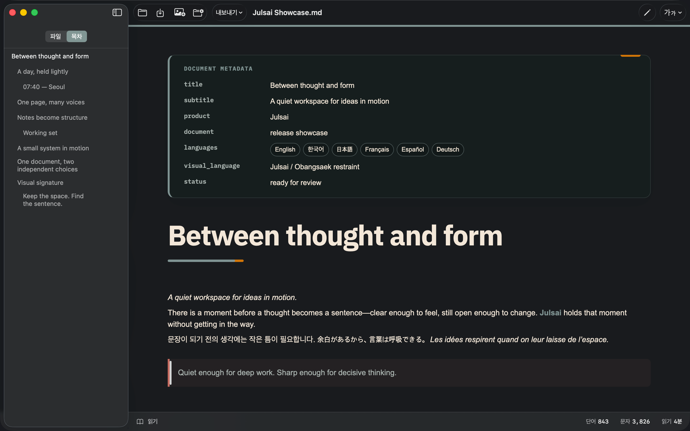
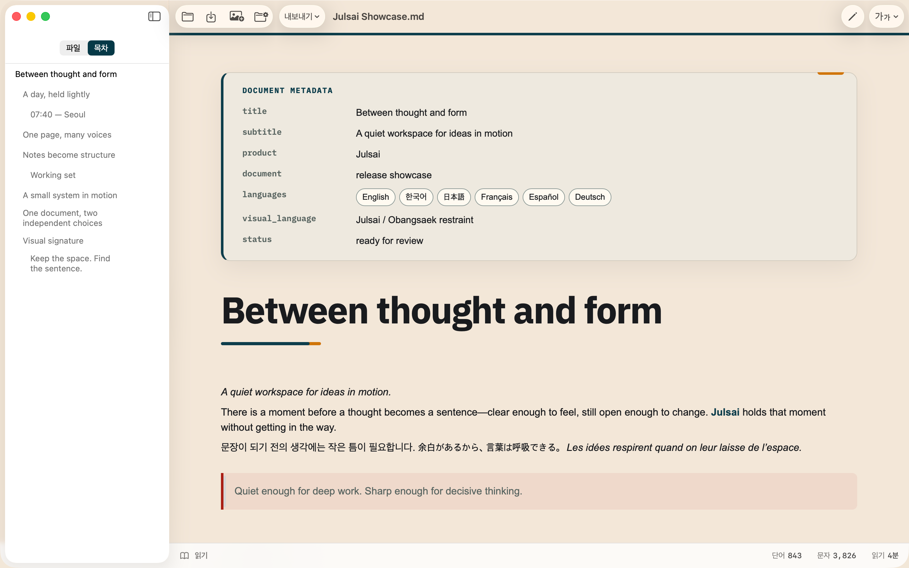
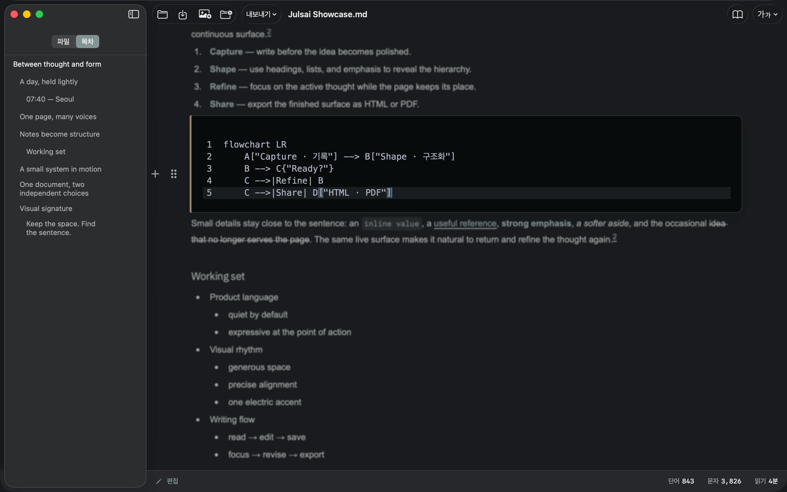
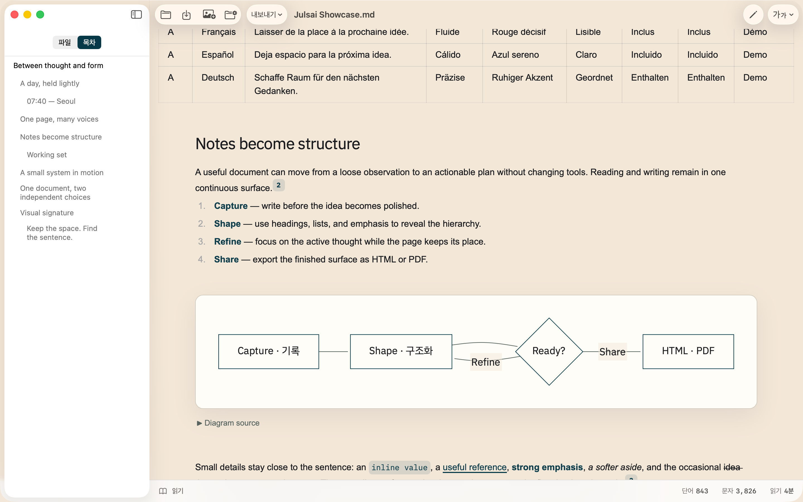
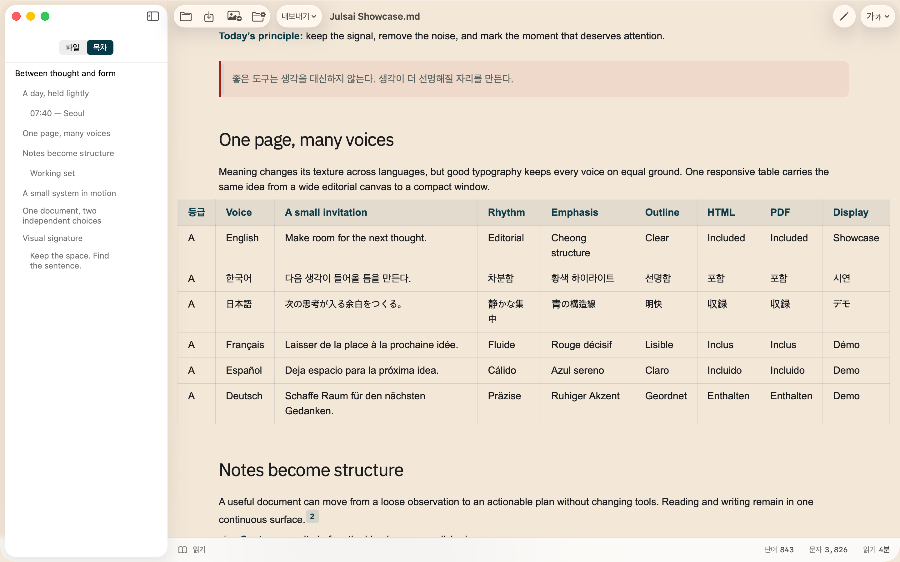

Julsai DarkInk / warm white
Local-first Markdown for macOS
Keep the document
in view.
Julsai turns Markdown into a continuous writing surface: read naturally, edit in place, and keep the structure of the original file intact.
01 WRITE IN PLACE

ONE CONTINUOUS SURFACE
01
Read and write together. No split preview to interrupt the thought.
02
Keep Markdown honest. Rich rendering remains grounded in the source file.
03
Stay with your files. No account, cloud, analytics, or document service.
01 / EXPERIENCE
A workspace with
room to think.
Julsai keeps the calm of a reading view while making every part of a document ready to revise. The interface recedes; hierarchy stays visible.
Julsai LightPaper / deep ink

02 / FOCUS
Make the active
thought unmissable.
Focus Mode softens the surrounding document while preserving its context. Typewriter Mode holds the current line at a comfortable writing height.
- Focus Mode
- Current block, clearly held.
- Typewriter Mode
- Caret anchored near eye level.
- Source Mode
- Original Markdown, always reachable.
FOCUS + TYPEWRITER / ACTIVE

The page stays present.
The working line comes forward.
03 / RICH MARKDOWN
More structure.
No detour.
Bring the document all the way through: outline, YAML Front Matter, Mermaid, footnotes, tables, images, HTML, and PDF.

From live document to finished output.

Wide data stays readable,
not squeezed.
04 / LOCAL-FIRST
The document
belongs with you.
Julsai opens the Markdown files and folders you choose on your Mac. It has no account, advertising, analytics, or operator-controlled document server.
Read the privacy policy줄과 사이에 질서를 만듭니다.
읽고, 고치고,
다시 이어갑니다.
Julsai는 문서의 형식을 과시하기보다 생각의 흐름을 지키는 Markdown 편집기입니다.